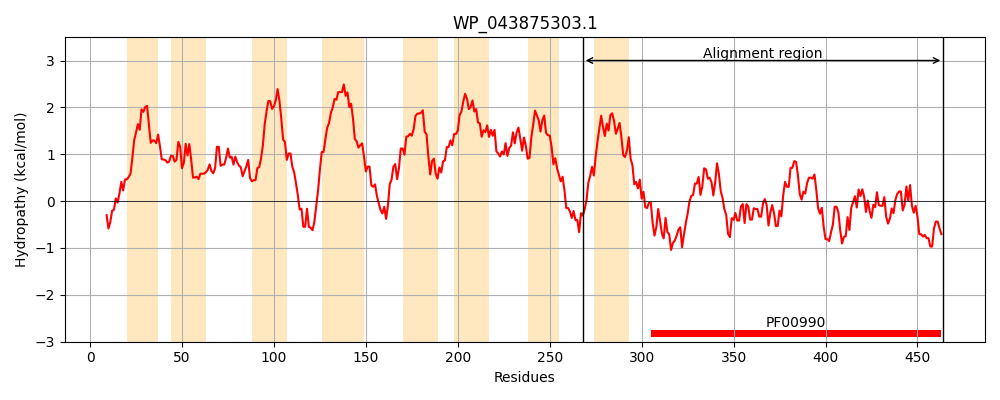
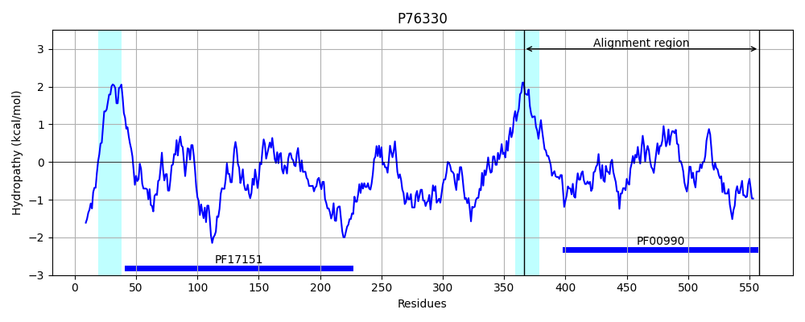
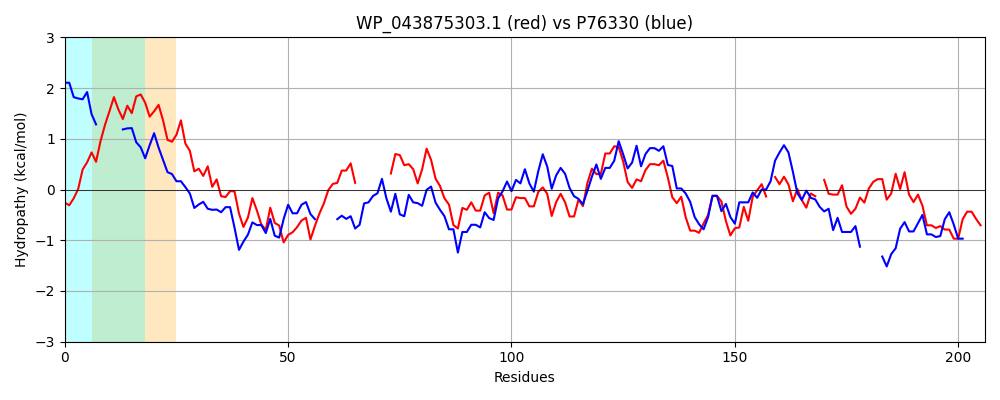

Hit Accession: P76330
Hit TCID: 9.B.34.1.4
Hit Description: gnl|BL_ORD_ID|11459 gnl|TC-DB|P76330|9.B.34.1.4 Probable diguanylate cyclase YedQ OS=Escherichia coli (strain K12) GN=yedQ PE=2 SV=2
Mach Len: 206
e:0.000000
Query TMS Count : 8
Hit TMS Count: 2
TMS-Overlap Score: 0.400000
Predicted Substrates:None
BLAST Alignment:
Score: 208 , Bit scores: 84 bits, E-value: 1.6e-17, Alignment length: 206, Percentage identity: 32
Query: 268 WQLFSTRLGIAAMLISPVIVASSVEAINTLVKQLALRADFDFQTRVYSRSGLSEALKRQTLPADKL-------LTVMVLDIDGFKRVNDALGHEGGDCVLTQFAQQVRQLVDEQGMVARIGGEEFAVAAVVDSTQQGYLLAEKIRHGVESQPFGLGQN-PIHLTISMGL-ETREVGHARITELFNQLLMAADEEMVKAKQTGRNRI 464
W LF+T L LIS ++ V + L L +A D TR+Y+R L E + P KL +V+ +D+D FK +ND GH+ GD VL+ A + + Q + R+GGEEF V S + +AE+IR + + + ++ I ++ S+G+ + E G F QL AD + AKQ GRNR+
Sbjct: 366 WALFTTML-----LISWYVIRRMVSNMYVLQSSLQWQAWHDTLTRLYNRGALFEKAR----PLAKLCQTHQHPFSVIQVDLDHFKAINDRFGHQAGDRVLSHAAGLISSSLRAQDVAGRVGGEEFCVILPGASLTEAAEVAERIRLKLNEKEMLIAKSTTIRISASLGVSSSEETGDYD----FEQLQSLADRRLYLAKQAGRNRV 558 | Protein Hydropathy Plots: |
|---|
|  |  |
Pairwise Alignment-Hydropathy Plot:
|
|---|
|  |